Ahmad Yoosofan
University of Kashan
https://yoosofan.github.io/en/
Based on Morris Mano's famous book
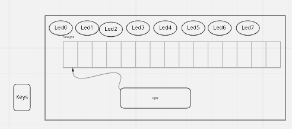
AND: Logical AND memory with AC ADD: Arithmetic ADD memory with AC LDA: Load from memory to AC STA: Store AC to memory BUN: Branch unconditional ISZ: Increment and skip if zero CLA: Clear AC CLE: Clear E CMA: Complement AC CME: Complement E CIR: Circulate right (AC and E) CIL: Circulate left (AC and E)
INC: Increment AC SPA: Skip if positive AC SNA: Skip if negative AC SZA: Skip if zero AC SZE: Skip if zero E HLT: Halt OUT: Output a character from AC SKO: Skip if output flag NOP: No operation
AND: 00001 ADD: 00010 LDA: 00011 STA: 00100 BUN: 00101 ISZ: 00110 CLA: 00111 CLE: 01000 CMA: 01001 CME: 01010 CIR: 01011 CIL: 01100
INC: 01101 SPA: 01110 SNA: 01111 SZA: 10000 SZE: 10001 HLT: 10010 OUT: 10011 SKO: 10100 NOP: 10101
https://www.circuitstoday.com/interfacing-hex-keypad-to-8051
https://circuitdigest.com/microcontroller-projects/keypad-interfacing-with-avr-atmega32
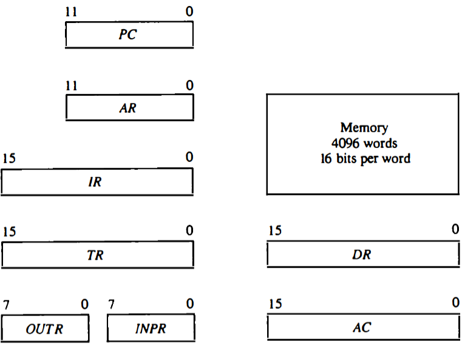
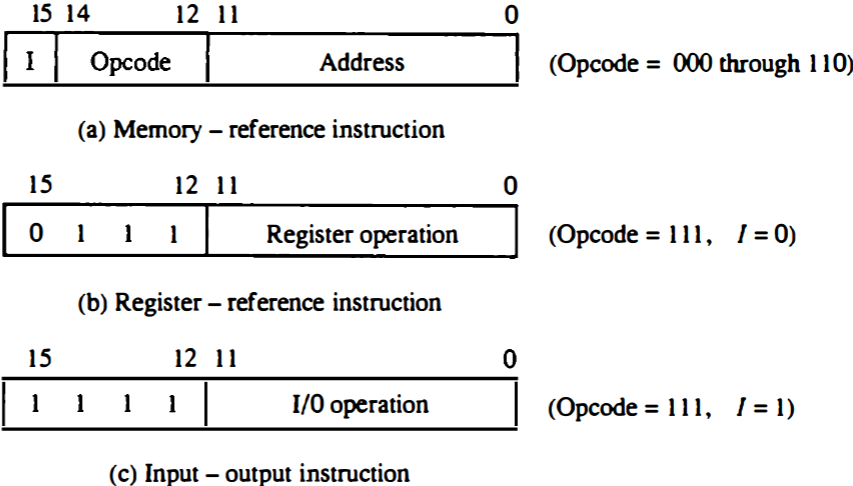
00101 00000 1010 00110 00000 1100 00111 00000 1110 01000 00000
اگر حداکثر ۳۲ دستور داشته باشیم پس پنج بیت برای دستورها نیاز داریم برای سادگی فرض میکنیم که طول همهٔ دستورها یکسان است یعنی هم دو بایت را میگیرند فرض کنید دستورها پنج بیت نیاز دارند پس ۱۱ بیت برای آدرس
حداکثر حافظهٔ این کامپیوتر چقدر میتواند باشد. اگر بخواهیم بایتی آدرس دهی کنیم
۲^۱۱ = ۲kB
B = Byte
اگر آدرسدهی را دو بایتی در نظر بگیریم
۴kB (word = 2 byte)
LED
lda a add b sta c out hlt a, 5 b, 2 c, 0
.......... .......... LB1: out sko bun LB1 ........... ...........
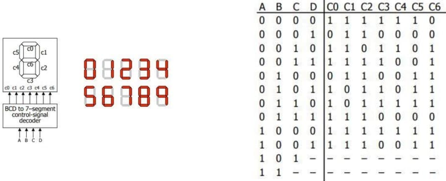
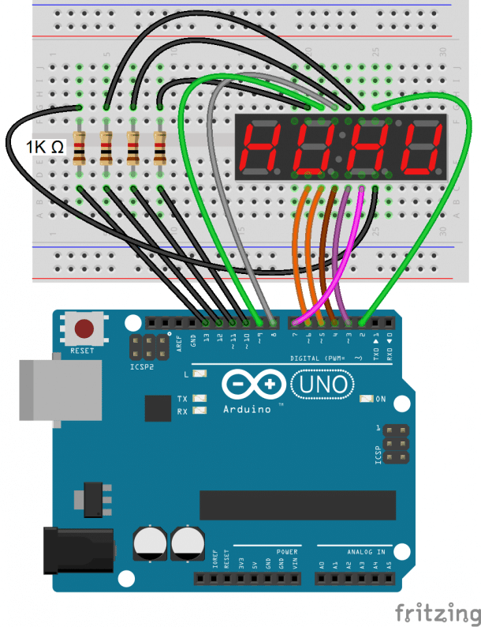
#include "SevSeg.h" SevSeg sevseg; void setup(){ byte numDigits = 1; byte digitPins[] = {}; byte segmentPins[] = {6, 5, 2, 3, 4, 7, 8, 9}; bool resistorsOnSegments = true; byte hardwareConfig = COMMON_CATHODE; sevseg.begin(hardwareConfig, numDigits, digitPins, segmentPins, resistorsOnSegments ); sevseg.setBrightness(90); } void loop(){ sevseg.setNumber(4); sevseg.refreshDisplay(); }
Segment Pin | Arduino Pin |
|---|---|
A | 6 |
B | 5 |
C | 2 |
D | 3 |
E | 4 |
F | 7 |
G | 8 |
DP | 9 |
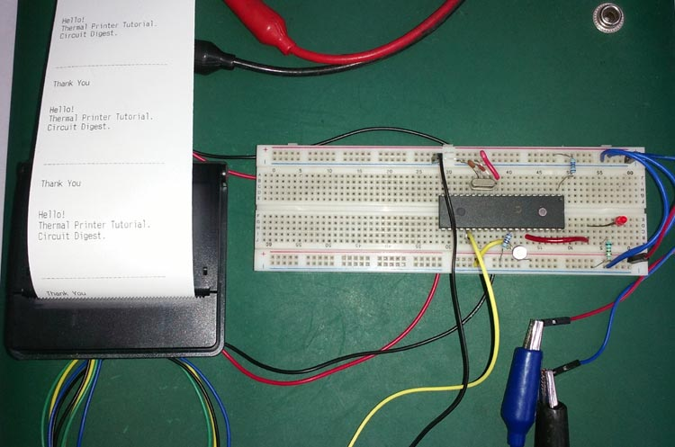
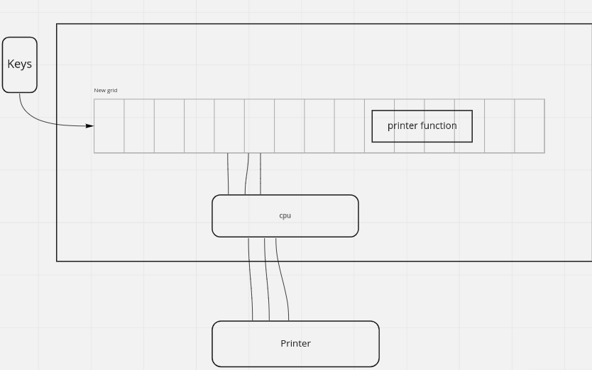
User Process (P) |
| |
0 | 800 | 2048 |
P |
| LED Procedure | |
0 | 648 | 1024 | 2048 |
P |
| LED | 7 segment | ||
0 | 456 | 1024 | 1048 | 1096 | 2048 |
P |
| LED | 7 | printer |
| |
0 | 456 | 1024 | 1048 | 1096 | 1256 | 2048 |
Users (programmers) should know where these precedures are
P |
| array | LED | 7 | printer |
| |
0 | 456 | 1000 | 1024 | 1048 | 1096 | 1256 | 2048 |
Array
1024 | 1048 | 1096 | 1256 | ||
0 | 1 | 2 | 3 | 4 |
indirect BSA
User chooses between old cpu or new one
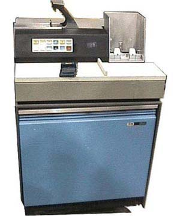
card punch
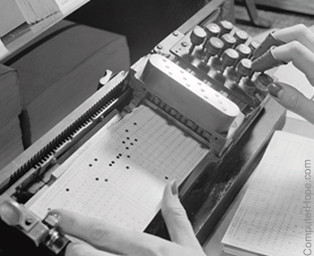
card reader
1 ORG 0 2 START, BSA READ1 3 STA BYTE1 4 LDA BYTE1 5 BSZ OUTCH 6 HLT 7 8 READ1, HEX 0 9 RDCNT, SKI 10 BUN RDCNT 11 INP 12 BUN (READ1) 13 14 OUTCH, HEX 0 15 OUTPR, SKO 16 BUN OUTPR 17 OUT 18 BUN (OUTCH) 19 20 BYTE1, DEC 0 21 END
1 ORG 0 2 START, BSA INPUT 3 STA NUM1 4 5 BSA INPUT 6 STA NUM2 7 8 LDA NUM1 9 ADD NUM2 10 STA RESULT 11 12 BSA OUTPUT 13 14 HLT
15 INPUT, HEX 0 16 POLL, SKI 17 BUN POLL 18 INP 19 BUN (INPUT) 20 21 OUTPUT, HEX 0 22 OUT_P, SKO 23 BUN OUT_P 24 OUT 25 BUN (OUTPUT) 26 27 // Data Section 28 NUM1, DEC 0 29 NUM2, DEC 0 30 RESULT, DEC 0 31 32 END
P |
| array | LED | 7 | printer |
| |
0 | 456 | 1000 | 1024 | 1048 | 1096 | 1256 | 2048 |
Array
1024 | 1048 | 1096 | 1256 | ||
0 | 1 | 2 | 3 | 4 |
1 START BSA (PVT_INPUT) 2 STA NUM1 3 BSA (PVT_INPUT) 4 STA NUM2 5 LDA NUM1 6 ADD NUM2 7 STA RESULT 8 BSA (PVT_OUTPUT) 9 HLT 10 NUM1, DEC 0 11 NUM2, DEC 0 12 RESULT, DEC 0 13 14 ORG 150 15 PVT_INPUT, HEX 200 16 PVT_OUTPUT, HEX 220 17 18 ORG 200 19 INPUT, HEX 0 20 IN_POLL,SKI 21 BUN IN_POLL 22 INP 23 BUN (INPUT)
19 ORG 220 20 OUTPUT, HEX 0 21 STA TEMP_OUT 22 23 OUT_POLL,SKO 24 BUN OUT_POLL 25 LDA TEMP_OUT 26 OUT 27 BSA (PVT_DELAY) 28 BUN (OUTPUT) 29 30 ORG 240 31 DELAY, HEX 0 32 LDA DELAY_COUNT 33 STA DELAY_CTR 34 35 DELAY_LOOP, 36 LDA DELAY_CTR
1 DELAY, HEX 0 2 LDA DELAY_COUNT 3 STA DELAY_CTR 4 5 DELAY_LOOP, 6 LDA DELAY_CTR 7 SZA 8 BUN CONTINUE_DELAY 9 BUN (DELAY) 10 11 CONTINUE_DELAY, 12 DEC 13 STA DELAY_CTR 14 BUN DELAY_LOOP 15 16 ORG 300 17 TEMP_OUT, DEC 0 18 DELAY_COUNT,DEC 10
21 DELAY_CTR, DEC 0 22 PVT_DELAY, HEX 52 23 END
Loader | user process |
| array | LED | 7 | printer | Card Reader |
| |
0 | 100 | 556 | 1000 | 1024 | 1048 | 1096 | 1256 | 1450 | 2048 |
Array
1024 | 1048 | 1096 | 1256 | ||
0 | 1 | 2 | 3 | 4 |
1 ORG 0 2 START, BSA READ_COUNT 3 STA BYTE_COUNT 4 BSA INIT_LOAD 5 BSA LOAD_LOOP 6 BSA EXECUTE 7 BUN 0 8 HLT 9 10 READ_COUNT, HEX 0 11 RD_CNT, SKI 12 BUN RD_CNT 13 INP 14 BUN READ_COUNT I 15 16 INIT_LOAD,HEX 0 17 LDA ZERO 18 STA CURRENT_IDX 19 BUN INIT_LOAD I 20 21 LOAD_LOOP,HEX 0 22 LDA CURRENT_IDX 23 SUB BYTE_COUNT 24 SPA 25 BUN LOAD_BYTE 26 BUN LOAD_LOOP I 27 28 LOAD_BYTE, 29 BSA READ_BYTE 30 STA TEMP_BYTE
32 LDA LOAD_PTR 33 ADD CURRENT_IDX 34 STA STORE_PTR 35 LDA TEMP_BYTE 36 STA STORE_PTR I 37 LDA CURRENT_IDX 38 INC 39 STA CURRENT_IDX 40 BUN LOAD_LOOP 41 42 READ_BYTE, HEX 0 43 RD_BYT, SKI 44 BUN RD_BYT 45 INP 46 BUN READ_BYTE I 47 48 ORG 128 49 EXECUTE,HEX 0 50 51 LDA ZERO 52 STA RESULT 53 BUN EXECUTE I 54 55 ORG 64 56 ZERO, DEC 0 57 BYTE_COUNT, DEC 0 58 LOAD_PTR, HEX 128 59 CURRENT_IDX,DEC 0 60 TEMP_BYTE, DEC 0 61 STORE_PTR, HEX 0 62 RESULT, DEC 0
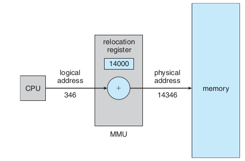
address binding, absolute and relocate loader
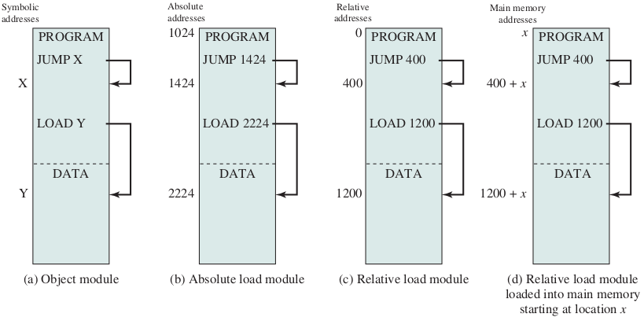
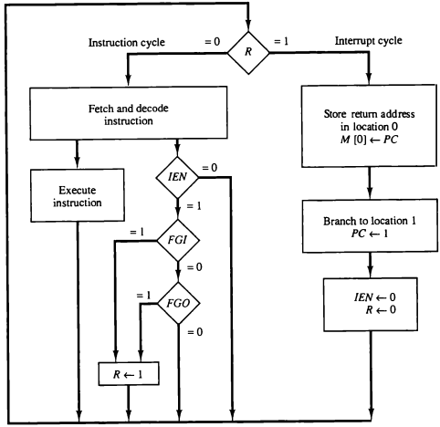
1 ORG 0 2 BUN MAIN 3 BUN ISR 4 5 MAIN, LDA ZERO 6 STA COUNT 7 ION 8 9 WORK, LDA COUNT 10 INC 11 STA COUNT 12 BUN WORK 13 14 ISR, STA SAVE 15 BSA IO 16 LDA SAVE 17 ION 18 BUN 0 I
20 IO, HEX 0 21 SKI 22 BUN OUTPUT 23 INP 24 STA BUFFER 25 BUN IO I 26 OUTPUT, SKO 27 BUN IO I 28 OUT 29 BUN IO I 30 31 ZERO, DEC 0 32 COUNT, DEC 0 33 SAVE, DEC 0 34 BUFFER, DEC 0 35 END
Save E flag
1 ORG 0 2 BUN MAIN 3 BUN ISR 4 MAIN, LDA ZERO 5 STA READY 6 ION 7 WAIT, LDA READY 8 SZA 9 BUN PROCESS 10 BUN WAIT 11 PROCESS,LDA BUFFER 12 ADD TEN 13 STA BUFFER 14 BSA OUT_SUB 15 HLT 16 17 OUT_SUB,HEX 0 18 POLL_O, SKO 19 BUN POLL_O 20 LDA BUFFER 21 OUT 22 BUN OUT_SUB I 23 24 ISR, BSA SAVE_SUB 25 SKI 26 BUN ISR_EXIT
28 INP 29 STA BUFFER 30 LDA ONE 31 STA READY 32 33 ISR_EXIT,BSA RSTR_SUB 34 ION 35 BUN 0 I 36 37 SAVE_SUB,HEX 0 38 STA TEMP_AC 39 CIL 40 STA TEMP_E 41 BUN SAVE_SUB I 42 43 RSTR_SUB,HEX 0 44 LDA TEMP_E 45 CIR 46 LDA TEMP_AC 47 BUN RSTR_SUB I 48 49 ZERO, DEC 0 50 ONE, DEC 1 51 TEN, DEC 10 52 READY, DEC 0 53 BUFFER, DEC 0 54 TEMP_AC,DEC 0 55 TEMP_E, DEC 0
Loader | READ | WRITE | ISR | DATA | user process | ||
0 | 2 | 100 | 150 | 200 | 250 | 300 | 1024 |
1 BUN LOADER_MAIN 2 BUN ISR 3 LOADER_MAIN, ION 4 LOAD_LOOP,BSA READ_WORD 5 STA PROG_SIZE 6 BSA LOAD_PROGRAM 7 BSA PROGRAM_BASE 8 BUN LOAD_LOOP 9 LOAD_PROGRAM, HEX 0 10 LDA ZERO 11 STA LOAD_INDEX 12 LOAD_PROGRAM_LOOP, 13 LDA LOAD_INDEX 14 SUB PROG_SIZE 15 SPA 16 BUN LOAD_DONE 17 BSA READ_WORD 18 STA TEMP_DATA 19 LDA LOAD_INDEX 20 ADD PROGRAM_BASE 21 STA TEMP_ADDR 22 LDA TEMP_DATA 23 STA TEMP_ADDR I 24 LDA LOAD_INDEX 25 INC 26 STA LOAD_INDEX 27 BUN LOAD_PROGRAM_LOOP 28 LOAD_DONE, BUN LOAD_PROGRAM I 29 ORG 100 30 READ_WORD, HEX 0 31 WAIT_FOR_INPUT, LDA INPUT_READY 32 SZA
33 BUN HAVE_INPUT 34 BUN WAIT_FOR_INPUT 35 HAVE_INPUT, 36 LDA INPUT_BUFFER 37 STA TEMP_DATA 38 LDA ZERO 39 STA INPUT_READY 40 LDA TEMP_DATA 41 BUN READ_WORD I 42 ORG 150 43 WRITE_WORD, HEX 0 44 STA OUTPUT_DATA 45 LDA ONE 46 STA OUTPUT_PENDING 47 WAIT_FOR_OUTPUT, 48 LDA OUTPUT_PENDING 49 SZA 50 BUN WAIT_FOR_OUTPUT 51 BUN WRITE_WORD I 52 ORG 200 53 ISR, STA SAVE_AC 54 SKI 55 BUN CHECK_OUTPUT 56 INP 57 STA INPUT_BUFFER 58 LDA ONE 59 STA INPUT_READY 60 BUN ISR_EXIT 61 CHECK_OUTPUT, SKO 62 BUN ISR_EXIT 63 LDA OUTPUT_PENDING 64 SZA
65 BUN PERFORM_OUTPUT 66 BUN ISR_EXIT 67 PERFORM_OUTPUT, 68 LDA OUTPUT_DATA 69 OUT 70 LDA ZERO 71 STA OUTPUT_PENDING 72 ISR_EXIT, LDA SAVE_AC 73 BUN 0 I 74 ORG 250 75 ZERO, DEC 0 76 ONE, DEC 1 77 PROG_SIZE, DEC 0 78 LOAD_INDEX, DEC 0 79 TEMP_ADDR, HEX 0 80 TEMP_DATA, DEC 0 81 INPUT_BUFFER, DEC 0 82 INPUT_READY, DEC 0 83 OUTPUT_DATA, DEC 0 84 OUTPUT_PENDING, DEC 0 85 SAVE_AC, DEC 0 86 PROGRAM_BASE, HEX 300 87 END 88 89 ORG 300 ; User program 90 USER_ENTRY, HEX 0 91 BSA 100 92 ADD TEN 93 BSA 150 94 BUN USER_ENTRY I 95 TEN, DEC 10 96 END
# Advanced: Buffered Input with BSA Subroutines src/in/Interrupt_Driven_Program_with_BSA_Subroutines_Advanced_with_buffer.asm src/in/Interrupt_Driven_Program_with_BSA_Subroutines_Advanced_with_buffer_comments.asm # Enhanced bootstrap loader with error checking src/in/Bootstrap_Loader_Program_More_Robust_Version_with_Error_Checking.asm # Relocating Bootstrap Loader with Base Register src/in/loader4_base_register_comments.asm # Simple Bootstrap Loader with Absolute Addressing src/in/loader7_interrupt_Simple_Bootstrap_Loader_with_Absolute_Addressing.asm src/in/loader7_interrupt_Simple_Bootstrap_Loader_with_Absolute_Addressing_comments.asm src/in/loader7_user_program_comments.asm src/in/loader7_user_program.asm # Uses interrupt-driven I/O instead of polling src/in/loader10_interrupt.asm src/in/loader10_interrupt_comments.asm # Interrupt-driven program that gets loaded src/in/loader10_loaded_program.asm src/in/loader10_loaded_program_comments.asm
Before Loader
After Loader
1 ORG 0 2 BUN LOADER 3 BUN ISR 4 LOADER, ION 5 LOOP, BSA READ_WORD 6 STA SIZE 7 BSA LOAD 8 UMD 9 BSA 300 10 BUN LOOP 11 12 ; ISR 13 ; Routines 14 END 15 16 ORG 300 ; User program 17 UPRG, HEX 0 18 BSA 100 19 ADD TEN 20 BSA 150 21 BUN 300 I 22 TEN, DEC 10 23 END
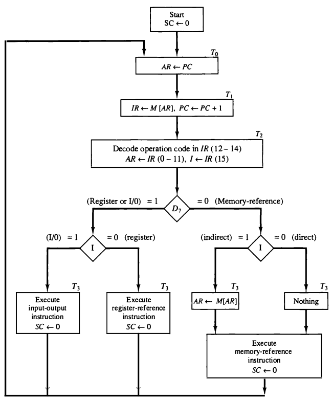
1 BUN BOOT 2 BUN ISR 3 4 ORG 030 5 HEX 0 6 BUN SYSCALL 7 BOOT,CLA 8 ; Load loop 9 ; jump to user 10 L_RUN, LDA PROG_BASE 11 ATB 12 CLA 13 STA 0 14 RTI 15 SYSCALL,SZA 16 BUN SC_CHECK 17 BUN BOOT
1 ORG 300 2 LDA C_RD 3 RTK 4 LDA MAILBOX 5 ADD FIVE 6 STA MAILBOX 7 LDA C_WR 8 RTK 9 CLA 10 RTK ;src/yic/yic90... 11 C_RD, DEC 1 12 C_WR, DEC 2 13 FIVE, DEC 5 14 ORG 700 15 MAILBOX, DEC 0
BOOT | LOADER | RUN | SYSCALL | ISR | DATA | user process | |||
0 | 32 | 60 | 94 | 104 | 172 | 220 | 300 | 1000 | 1024 |
1 ORG 0 2 BUN BOOT 3 BUN ISR 4 5 ORG 030 6 HEX 0 7 BUN SYSCALL 8 9 BOOT, CLA 10 STA IN_READY 11 STA OUT_READY 12 ION 13 14 GETSZ, LDA IN_READY 15 SZA 16 BUN HAVE_SZ 17 BUN GETSZ 18 HAVE_SZ,LDA IN_BUFFER 19 STA PROG_SIZE 20 CLA 21 STA IN_READY 22 23 LDA PROG_PHYS 24 STA PTR 25 26 L_LOOP, LDA PROG_SIZE 27 SZA 28 BUN L_READ 29 BUN L_RUN 30 L_READ, LDA IN_READY 31 SZA 32 BUN L_STORE
33 BUN L_READ 34 L_STORE,LDA IN_BUFFER 35 STA PTR I 36 ISZ PTR 37 CLA 38 STA IN_READY 39 LDA PROG_SIZE 40 ADD M_ONE 41 STA PROG_SIZE 42 BUN L_LOOP 43 44 L_RUN, LDA PROG_PHYS 45 ATB 46 CLA 47 STA 0 48 RTI 49 50 SYSCALL,SZA 51 BUN SC_CHECK 52 BUN BOOT 53 54 SC_CHECK,ADD M_ONE 55 SZA 56 BUN SC_WRITE 57 58 ION 59 W_IN, LDA IN_READY 60 SZA 61 BUN RD_DONE 62 BUN W_IN 63 RD_DONE, 64 LDA IN_BUFFER
65 STA MAILBOX 66 CLA 67 STA IN_READY 68 BUN SC_RET 69 70 SC_WRITE, 71 LDA MAILBOX 72 STA OUT_BUFFER 73 LDA ONE 74 STA OUT_READY 75 ION 76 W_OUT, LDA OUT_READY 77 SZA 78 BUN W_OUT 79 80 SC_RET, IOF 81 LDA 030 82 STA 0 83 RTI 84 85 ISR, STA SAVE_AC 86 CIL 87 STA SAVE_E 88 SKI 89 BUN I_OUT 90 INP 91 STA IN_BUFFER 92 LDA ONE 93 STA IN_READY 94 I_OUT, SKO 95 BUN I_END 96 LDA OUT_READY
97 SZA 98 BUN DO_OUT 99 BUN I_END 100 DO_OUT, LDA OUT_BUFFER 101 OUT 102 CLA 103 STA OUT_READY 104 I_END, LDA SAVE_E 105 CIR 106 LDA SAVE_AC 107 RTI 108 109 ONE, DEC 1 110 M_ONE, DEC -1 111 PROG_PHYS, HEX 300 112 PROG_SIZE, DEC 0 113 PTR, HEX 0 114 IN_READY, DEC 0 115 IN_BUFFER, DEC 0 116 OUT_READY, DEC 0 117 OUT_BUFFER,DEC 0 118 SAVE_AC, DEC 0 119 SAVE_E, DEC 0 120 121 ORG 1000 122 MAILBOX, HEX 0 123 END
1 ; user program 2 3 ORG 300 4 5 LDA C_RD 6 RTK 7 8 LDA MAILBOX 9 ADD FIVE 10 11 STA MAILBOX 12 LDA C_WR 13 RTK 14 15 CLA 16 RTK ;src/yic/yic90... 17 18 C_RD, DEC 1 19 C_WR, DEC 2 20 FIVE, DEC 5 21 22 ORG 700 23 24 MAILBOX, DEC 0
1 mov ah, 0x0e 2 3 ; function number = 0Eh 4 ; : Display Character 5 6 mov al, '!' 7 8 ; AL = code of character 9 ; to display 10 11 int 0x10 12 13 ; call INT 10h, 14 ; BIOS video service
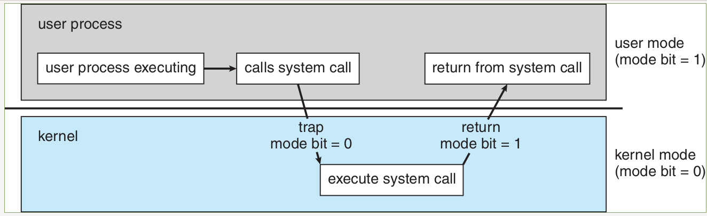
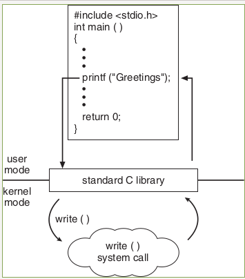
The timer decrease by 1 at the start of every Instruction Fetch Cycle
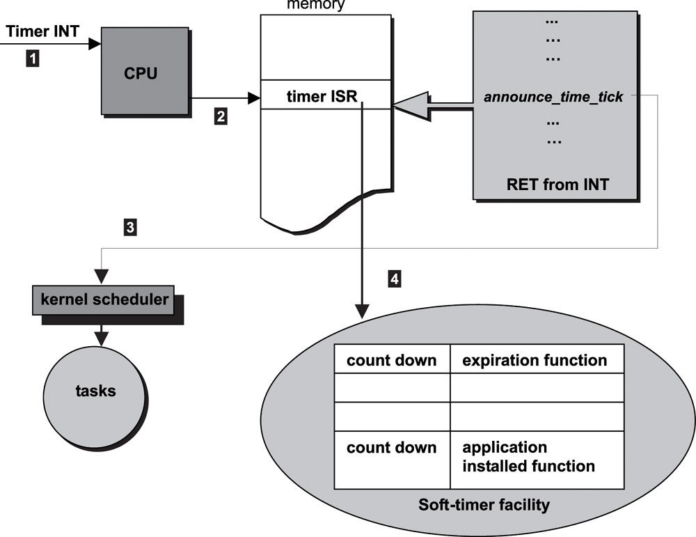
; ... ; Read Card 1 into AC ATT ; Read Card 2, program size ; Read program cards ; RTI to user program
ISR, STA SAVE_AC ; ... Save other things SKT BUN CHECK_IO BUN TRAP_ABORT CHECK_IO, SKI BUN I_OUT ; ... TRAP_ABORT, ; took too long ; end the program BUN BOOT
1 BUN BOOT 2 BUN ISR 3 ORG 030 4 HEX 0 5 BUN SYSCALL 6 BOOT, CLA 7 STA IN_READY 8 STA OUT_READY 9 ION 10 L_TMR,LDA IN_READY 11 SZA 12 BUN HAVE_TMR 13 BUN L_TMR 14 HAVE_TMR,LDA IN_BUFFER 15 ATT 16 CLA 17 STA IN_READY 18 L_SZ, LDA IN_READY 19 SZA 20 BUN HAVE_SZ 21 BUN L_SZ 22 HAVE_SZ,LDA IN_BUFFER 23 STA PROG_SIZE 24 CLA 25 STA IN_READY 26 LDA PROG_BASE 27 STA PTR 28 L_LOOP,LDA PROG_SIZE 29 SZA 30 BUN L_READ 31 BUN L_RUN 32 L_READ,LDA IN_READY 33 SZA
35 BUN L_STORE 36 BUN L_READ 37 L_STORE,LDA IN_BUFFER 38 STA PTR I 39 ISZ PTR 40 CLA 41 STA IN_READY 42 LDA PROG_SIZE 43 ADD M_ONE 44 STA PROG_SIZE 45 BUN L_LOOP 46 L_RUN, LDA PROG_BASE 47 ATB 48 CLA 49 STA 0 50 RTI 51 SYSCALL,SZA 52 BUN SC_CHECK 53 SC_EXIT,FSH 54 BUN BOOT 55 SC_CHECK,ADD M_ONE 56 SZA 57 BUN SC_WRITE 58 ION 59 W_IN, LDA IN_READY 60 SZA 61 BUN RD_DONE 62 BUN W_IN 63 RD_DONE,LDA MAIL_PHYS 64 STA PTR 65 LDA IN_BUFFER 66 STA PTR I
67 CLA 68 STA IN_READY 69 BUN SC_RET 70 SC_WRITE, 71 LDA MAIL_PHYS 72 STA PTR 73 LDA PTR I 74 STA OUT_BUFFER 75 LDA ONE 76 STA OUT_READY 77 ION 78 W_OUT,LDA OUT_READY 79 SZA 80 BUN W_OUT 81 SC_RET,IOF 82 LDA 030 83 STA 0 84 RTI 85 ISR, STA SAVE_AC 86 CIL 87 STA SAVE_E 88 SKT 89 BUN CHK_IO 90 BUN BOOT 91 CHK_IO,SKI 92 BUN CHK_OUT 93 INP 94 STA IN_BUFFER 95 LDA ONE 96 STA IN_READY 97 CHK_OUT,SKO 98 BUN ISR_END
99 LDA OUT_READY 100 SZA 101 BUN DO_OUT 102 BUN ISR_END 103 DO_OUT, LDA OUT_BUFFER 104 OUT 105 CLA 106 STA OUT_READY 107 ISR_END,LDA SAVE_E 108 CIR 109 LDA SAVE_AC 110 RTI 111 PROG_BASE, HEX 300 112 MAIL_PHYS, HEX 1000 113 ONE, DEC 1 114 M_ONE, DEC -1 115 PROG_SIZE, DEC 0
1 LDA C_RD 2 RTK 3 LDA MAILBOX 4 ADD TEN 5 STA MAILBOX 6 LDA C_WR 7 RTK 8 CLA 9 RTK 10 C_RD, DEC 1 11 C_WR, DEC 2 12 TEN, DEC 10 13 ORG 700 14 MAILBOX, DEC 0
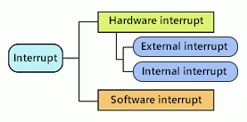
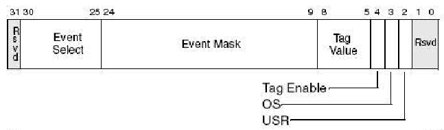
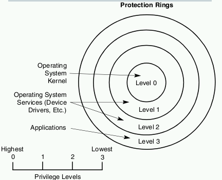
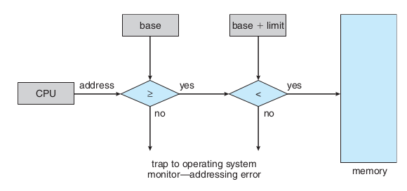
- No recursion
- No explicit data transfer
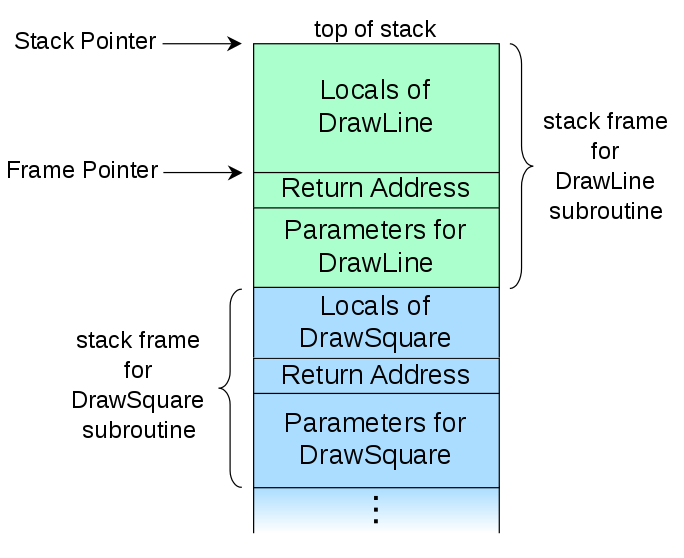
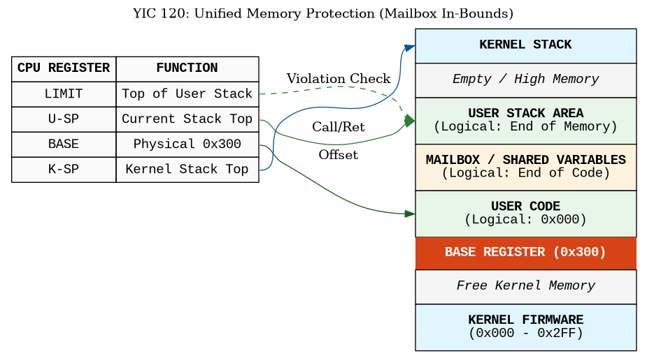
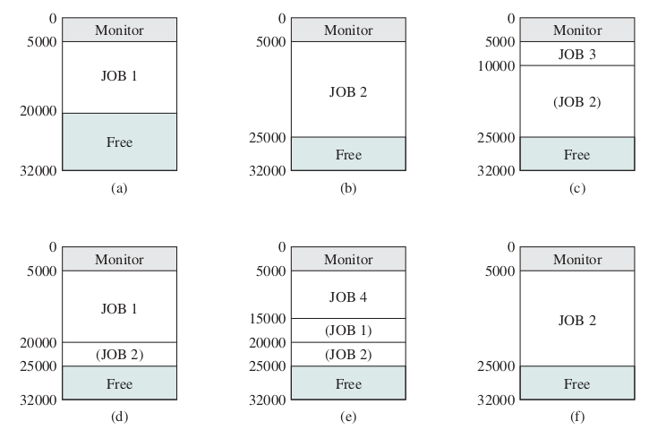
END